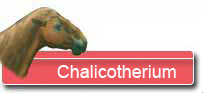
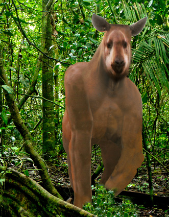
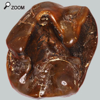

|
  |
||
 |
|
||
 Tombé de la passerelle de l'arche de Noé!  Les pattes arrière trapues sont adaptées à 2 comportements : s'asseoir pour manger ou se redresser pour accéder aux branches des arbres. Les doigts ont évolué en griffes.Les pattes de devant se sont libérées d'une partie des contraintes de supportage et se sont adaptées en auxiliaires pour l'alimentation. La morphologie de la main constitue un handicap physique pour la course. On imagine mal le chalicotherium en train de détaler pour échapper aux prédateurs. En effet la configuration du squelette en général et la portée sur la main en particulier ont tendance à limiter l'aptitude à la course. Mais comment le vulnérable Chalicotherium Grande a-t-il survécu si longtemps avec un handicap si lourd? Il y a 2 solutions : -Soit le chalicothère adulte est de taille significativement plus importante que le plus gros des prédateurs. Ainsi un rhino en bonne santé ne sera pas inquiété par un lion. -L'autre hypothèse c'est que le chalicothere a dû développer des parades spécifiques pour ré-équilibrer la relation entre proie et prédateur. Objectivement le Chalicothère n'était armé ni pour mordre ou ni pour ruer. Alors on peut penser que les doigts dotés de longues griffes constituent une arme redoutable.
Des dents en calice ... Il s'agit de dents assez particulières qui devaient être très spécialisées pour un type précis d'alimentation. Les dents  Avec cet outillage, le chalicothère devait être très méticuleux dans le choix des feuilles dont il se nourrissait. Quand on est un monogastrique, on peut faire le choix de manger beaucoup et « faire du rendement quantitatif » au détriment du « rendement qualitatif ». C'est le cas de l'éléphant. L'autre option retenue par le chalicothère : une spécialisation importante en mangeant peu mais en choisissant des aliments très nutritifs. Pour autant l'étude de l'usure de l'ivoire a permis de monter que ces dents étaient aussi utilisées pour broyer des brindilles et même de l'écorce. |
|||